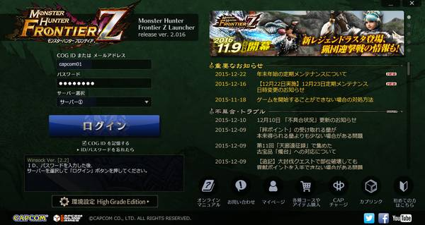
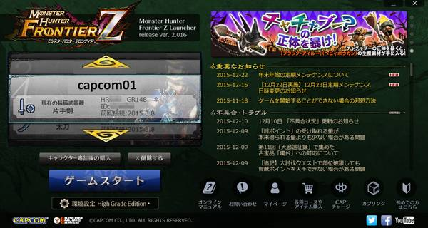
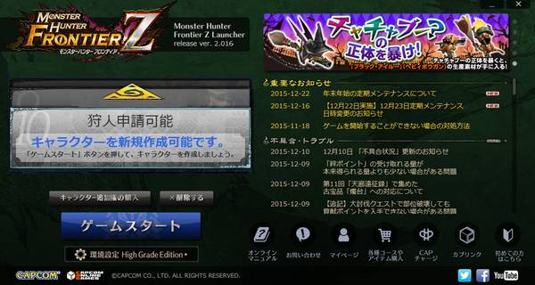
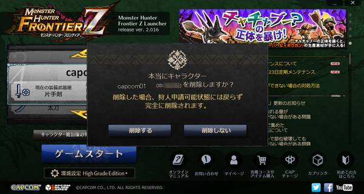

ランチャー画面からキャラクターの追加と削除を行なえます。
キャラクターを追加購入することで、同一サーバーで複数のキャラクターを保持することができます。

（１）ランチャーを起動させます。
COG IDとパスワードを入力してから、[ログイン］ボタンをクリックします。

（２）ログインに成功すると、キャラクターの選択画面が表示されます。複数のキャラクターを所持していると画面内の上下の三角でキャラクターを選択できます。
追加で新たにキャラクターを購入したい場合は画面内の「キャラクター追加権の購入」をクリックします。（クリック後COGのWEBサイトに移動します）

（３）追加権を購入済みでまだ設定前のキャラクターがいる場合は「狩人申請可能」の項目が表示されます。「狩人申請可能」を選択した状態で［ゲームスタート］ボタンをクリックすると、タイトル画面に進みます。
初めてゲームにログインしたときと同様に、ゲームを始めてキャラクターを作成してください。
キャラクターの削除はランチャー画面で行えます。削除した場合、そのキャラクターが所持しているアイテムはすべて無くなり、猟団の猟団長だった場合、その猟団は解散となります。
・複数のキャラクターを保持している場合、削除した分のキャラクターはその分のキャラクター枠を完全に失います。削除にあたってはご注意ください。
例：2キャラクターを保持している状態で、1キャラクターを削除した場合
⇒新規キャラクターを再作成できなくなり、再度新規キャラクターを
作成するにはキャラクター追加サービスの購入が必要になる
・キャラクターを削除すると、そのキャラクターに使用したイベントコードも使えなくなります。また、新規に作成したキャラクターに入手したイベントコードを使用することはできません。
・最後の1キャラクターの削除を行うと、7日間（168時間）経過するまで次の削除はできません。キャラクター削除および、次のキャラクターの作成にはくれぐれもご注意ください。
（１）ランチャーを起動させます。
COG IDとパスワードを入力してから、[ログイン］ボタンをクリックします。
（２）ログインに成功すると、キャラクターの選択画面が表示されます。複数のキャラクターを所持していると画面内の上下の三角でキャラクターを選択できます。
削除したいキャラを選択後、画面内の「削除する」ボタンをクリックします。

（３）削除確認画面が表示されます。問題がなければ「削除する」をクリックします。
クリックすると、キャラクターが削除され、削除完了画面が表示されます。
（４）すべてのキャラクターを削除した場合のみ、「狩人申請可能」が選択可能となります。